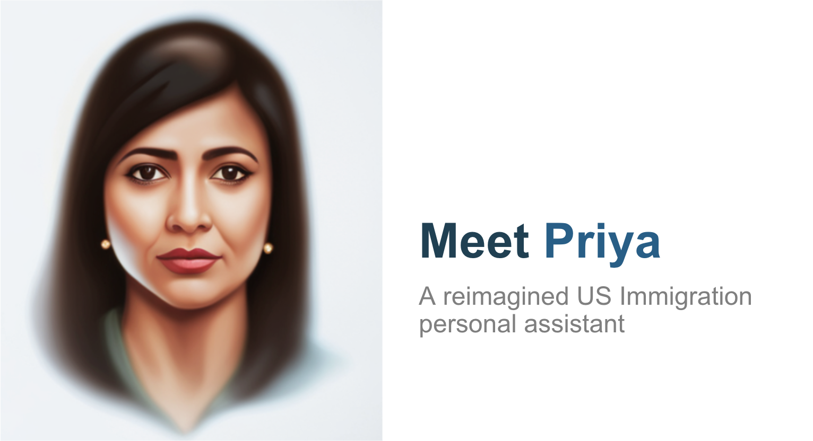
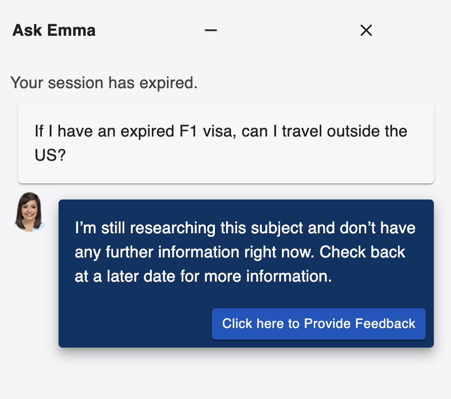
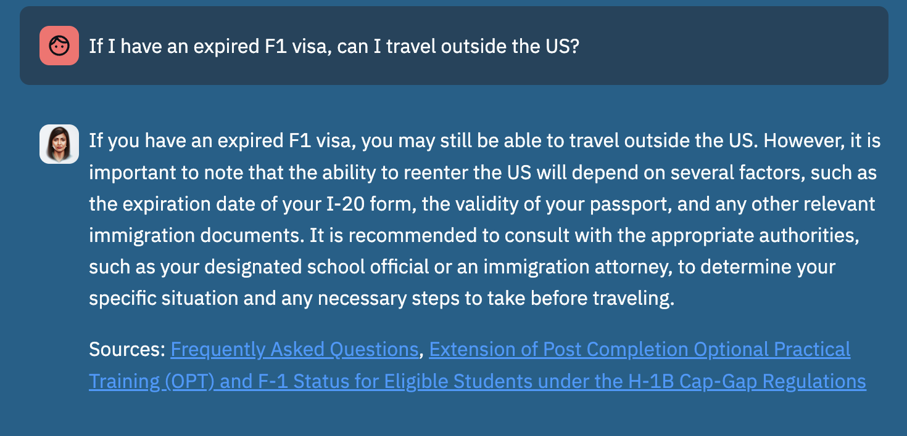
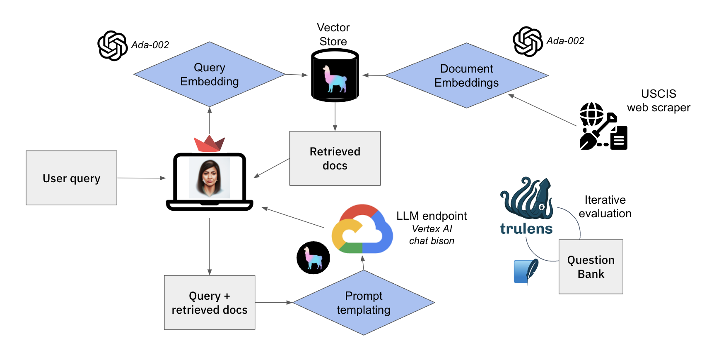
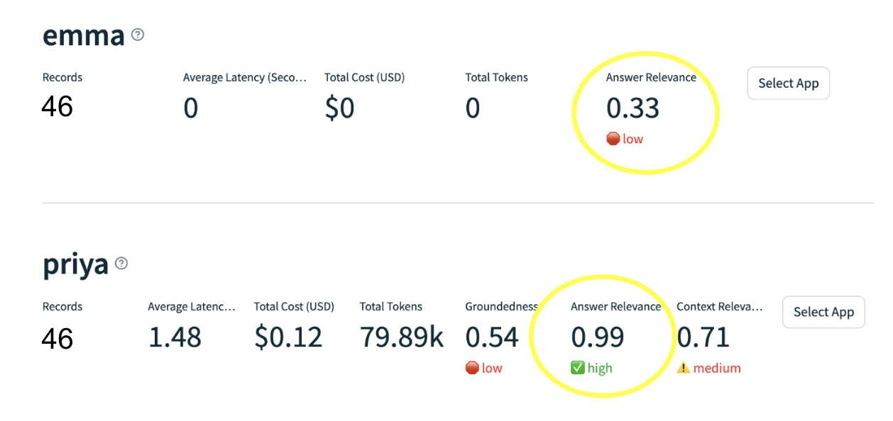

US Immigration is complicated
There are millions of people looking to either visit, move to or reside in the US. And in that pursuit, they are confronted with the US immigration system overseen by the USCIS (United States Citizenship and Immigration Services).
And as anyone will tell you, dealing with the USCIS is a nightmare. The forms are complicated, the instructions are confusing and the wait times are long. And if you make a mistake, you could be denied entry or worse, deported.
The abundance of policies, forms and instructions are overwhelming, especially for native English speakers.
The current solution
USCIS’s attempt at a solution is ‘Ask Emma’ which, in their words, is a “computer-generated virtual assistant who can answer your questions and even take you to the right spot on our website.”
But Ask Emma is not very helpful. It is not very smart and it is not very human. It’s responses are quite formulaic, with users typically picking from a menu of choices. Here you can see Ask Emma not knowing an answer to a question that is very common among international students.

Furthermore, Ask Emma is not very accessible as it is only available in English and Spanish.
The better solution - Ask Priya
So you have this large body of textual information on immigration services that is publicly available on the USCIS website, and a poorly perofrming chatbot that is not very accessible. How do we make this information more accessible?
Enter Retrieval Augmented Generation (RAG) models. RAG models are a combination of a retrieval model and a generation model. The retrieval model is used to retrieve relevant passages from the USCIS website, and the generation model is used to generate an answer to the question based on the retrieved passages and the user’s question.
So a few compadres and I built Ask Priya.

Systems design
So how does Ask Priya work under the hood? At a high level, it takes a user’s question, embeds it using openai’s ada-002 model, then similar documents are retrieved from the llama-index vector store, and then the LLM, Vertex AI Chat Bison, is given both the question and the retrieved documents to generate an answer, which is then returned to the user. The vector store here contains embeddings of all the documents (web pages) on the USCIS website.
And this pipeline’s performance is evaluated using Trulens Eval which I will cover in detail in the next section.

Evaluation
So we have a working RAG model, but how do we know if it is performing well? To answer that, we first needed a baseline performance for comparison.
So we used the trulens package to establish an ‘answer relevance’ score for Ask Emma. For the unacquainted, trulens is a package that essentially lets you easily use LLMs to evaluate LLM performance. It works by prompting another LLM, known as an ‘evaluator,’ to assess the performance of your model. This assessment typically involves scoring the original model’s responses based on criteria such as ‘answer relevance,’ which measures how closely the LLM’s response aligns with the user’s query.
The difference in answer relevance between Ask Emma (0.33) and Ask Priya (0.99) is quite stark. This means that Ask Priya’s is actually answering the question asked by the user. Of course, this is not indicative of whether the answer is actually correct, but it is a great start.

Next steps
The proof of concept for Ask Priya won first place at the Truera Hackathon and we are excited to continue working on it. Some of the next steps include:
- Try further advanced retrieval strategies to improve the groundedness metric
- Further prompt engineering to improve answer quality
- Migrate to google cloud deployment
- Add more trulens feedback functions
And more! Excited for the progression of Ask Priya!